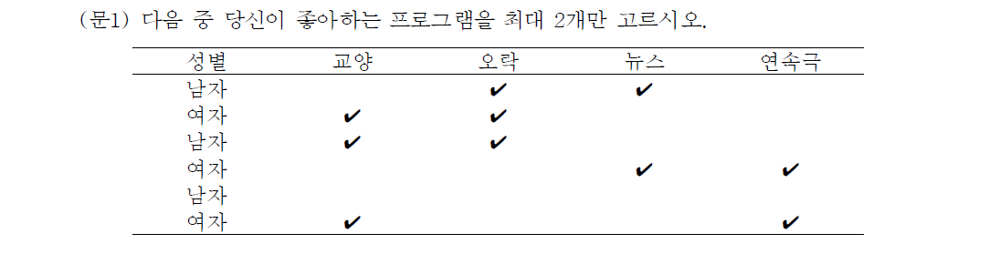
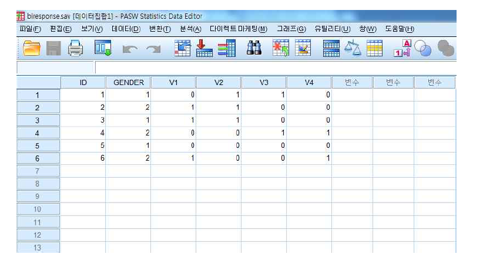
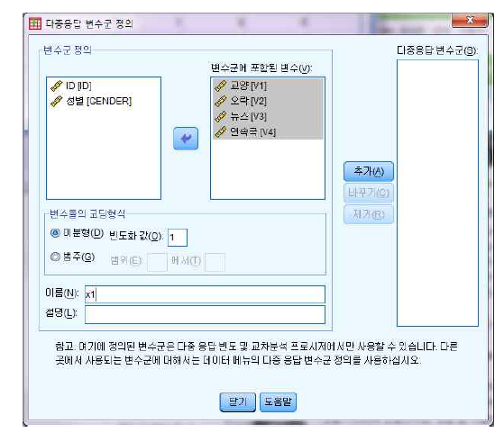
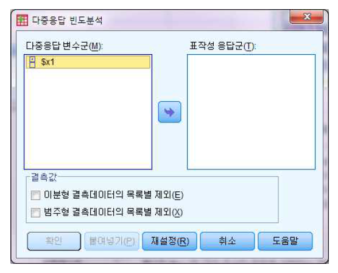
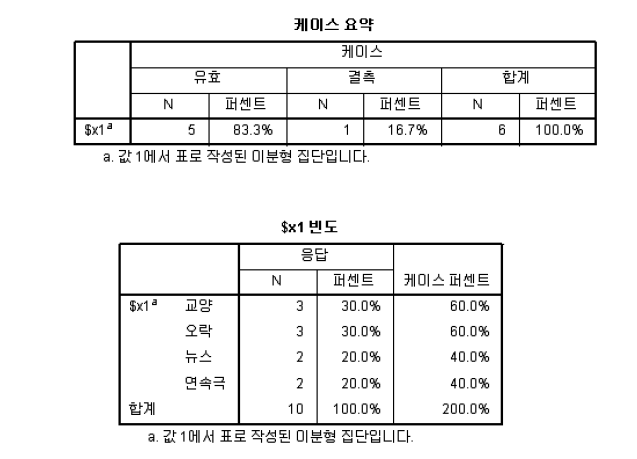
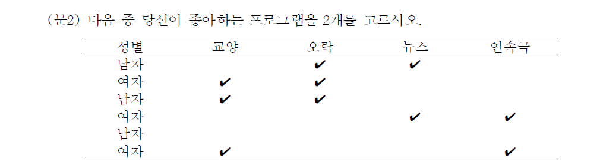
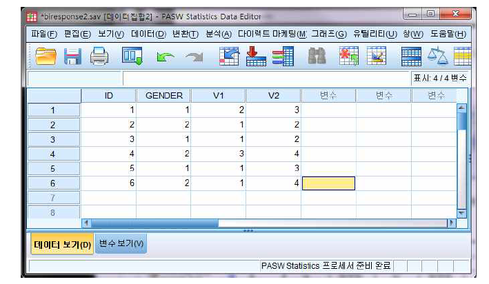
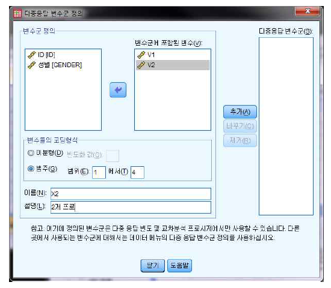
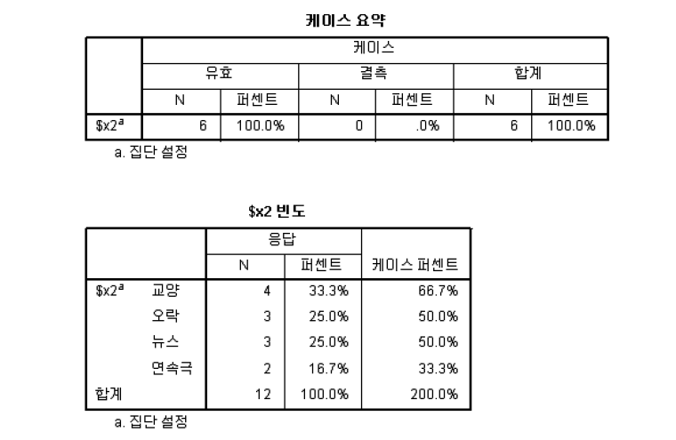

Chapter 8 복수응답 처리분석
연구자가 응답을 얻어내기 위해 복수로 응답하는 설문을 이용하는 경우가 있다. 복수로 응답되는 자료는 설문방식에 따라 복수 이분형과 다중 범주형으로 구분되고, 입력하는 방식도 각각 다르다. 여러 종류의 복수응답설문 중 어느 것을 선택할 것인가는 연구자의 연구 목적에 따라 선택하게 된다.
8.1 이분형 응답처리
이분형 응답처리는 각 응답자에 대한 복수응답처리의 한 가지 방법으로 각 응답자가 선택한 변수에 값 “1”을 부여하고 선택하지 않은 변수에는 “0”을 부여하는 방법이다.

위 설문의 응답자료를 입력하기 위해서는 초기화면에서 다음과 같은 순서에 의해서 작업을 진행하면 된다.

여기서, GENDER=성별(1=남자, 2=여자), V1=교양, V2=오락, V3=뉴스, V4=연속극이다.
복수응답에 대한 자료를 입력하기 위해서는 다음과 같은 과정을 거친다.
다중응답(U)
변수군 정의(E)
각각 변수에 대하여 응답자가 선호하는 프로에 선택한 경우는 ‘1,’ 선택하지 않은 경우는 ‘0’을 입력한 후, 복수응답 처리를 위해서는 변수를 통합하여야만 복수응답 란에서 빈도분석 및 교차분석을 할 수 있다. 2개 이상의 복수응답에 대한 (문3)도 마찬가지 0과 1로 응답한 값을 입력하면 된다.
위와 같이 복수응답에서 임시변수를 만들기 위한 다중응답 변수군 정의 창(Define Multiple Response Sets)이 나타난다. 왼쪽 상자의 변수군 정의(Set Define)에서 교양, 오락, 뉴스, 연속극 변수를 변수군에 포함된 변수(Variable in Set)란에 옮긴 후, 변수들의 코딩형식(Variable Are Code As)의 ◎ 이분형란에서 반응값(Dichotomies Counted value)에 `1’을 입력한다. 그리고, 새로운 변수를 만들기 위해 이름(Name)란에‘X1’이라는 새로운 변수를 입력하고 추가(Add)를 누르면, 오른쪽 다중 응답변수군(Mult Response Sets)에 ‘$X1’이 생성된다. 이후 닫기(Close)를 클릭하면 새로운 변수 만들기가 끝난다.
이제 복수응답의 빈도분석을 실시하기 위해서, 다음과 같이 실행한다.
다중응답(U)
빈도분석(F)
그림에서 다중응답 변수군(Mult Response Sets)에 있는 복수응답 변수[X1]을 오른편의 표작성 응답군(Tables for)으로 옮긴 후 확인을 누르면 다음과 같은 결과를 얻을 수 있다.
[결과: 다중응답 빈도분석]

전체 응답자 6명에 대해 최대 2개의 응답을 받은 각각의 빈도수와 백분율이 나타나 있다.
8.2 범주형 응답처리
이분형 응답처리 입력시에 0,1 코드를 사용하였다. 범주형에서는 질문 번호를 그대로 사용한다. 즉, 다음 화면에서 보는 바와 같이, 첫 번째 응답자는 pro1에 2번 “오락,” pro2에 3번 “뉴스”를 선택하고 있음을 나타낸다. 이 방법은 설문지상에 요구한 선택개수와 동일한 수의 변수(예를 들어, pro1과 pro2)를 만들어 처리하는 방법이다.

이에 대한 범주형 응답처리 초기화면은 다음과 같다.

여기서, GENDER=성별(1=남자, 2=여자), V1=첫번째 선호프로(1=교양, 2=오락, 3=뉴스, 4=연속극)이고 V2=두번째 선호프로이다.

변수군 정의상자에서 “V1,” “V2”를 동시에 지정한 후 오른편의 변수군에 포함된 변수로 옮긴다. 변수들의 코딩형식 상자에서 ◎ 범주형(Categories)을 클릭한 후, 범위(Range)란에 “1”에서 “4”를 입력한다. 그리고 이름과 설명란에 변수명을 넣어주고 추가를 누르면 오른쪽 하단의 다중응답변수군란에 “$X2”가 추가된다.
[결과: 다중응답 빈도분석]

전체 응답자 6명에 대해 2개씩 응답을 받은 각각의 빈도수와 백분율이 나타나 있다.